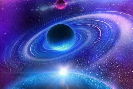

.webp)
Published: August 1, 2025
The supernova remnant Cassiopeia A is a breathtaking cosmic spectacle.
This colorful structure formed when a massive star exploded about 340
years ago. Recent composite images combine X‑ray data from Chandra (shown
in blue), infrared from Webb (reds and greens), and optical light from
Hubble, revealing swirling filaments of sulfur, calcium, iron, and other
elements racing outward at thousands of kilometers per second. The imagery
is dramatic—neon-like filaments illuminate the void, resembling a
celestial firework frozen in time. Beyond its beauty, Cassiopeia A is a
laboratory for science—mapping how heavy elements are forged and
redistributed through space
The Hubble Ultra‑Deep Field (HUDF) transforms a seemingly blank patch of sky into a cosmic forest of galaxies, each glimmering with billions of stars. Captured over days of exposure, the HUDF reveals galaxies as they existed up to 13 billion years ago—showing an early universe in formation. That small sliver of space may contain over 10,000 galaxies—each with its own stars and systems—highlighting the immensity and complexity of the cosmos. Time, space, and life converge in a single frame, reminding us how deeply populated and ancient the universe truly is.Among the most breathtaking sights in space are nebulae—vast clouds of dust and gas scattered across the galaxy. These aren't just beautiful—they're essential to the universe’s life cycle. Nebulae like the Eagle Nebula’s Pillars of Creation or the Orion Nebula are cradles where new stars are born. Their forms are often surreal, shaped by stellar winds, radiation, and gravity into pillars, waves, or even familiar shapes like animals. What makes nebulae especially mesmerizing is their texture: soft, wispy, dreamlike structures that seem to hang in space like smoke frozen in time. Capturing their glow requires long exposures and multiple filters, but what we get are images that rival the most imaginative works of art ever created by humans.Galaxies are perhaps the most iconic symbols of cosmic beauty. Spiraling arms, glowing centers, and endless starfields define these enormous structures, each home to billions—sometimes trillions—of stars. The Milky Way, our own galactic home, is just one among an estimated two trillion galaxies in the observable universe. When we see a spiral galaxy like Andromeda or a spectacular merger captured by Hubble, we’re not just seeing light—we’re seeing time. Some of the light reaching us today left its galaxy millions or billions of years ago, meaning we are looking into the past. This mix of scale, distance, and complexity gives galaxies a humbling and poetic charm—they are the universe's timeless time capsules, each glowing with stories of creation and destruction.
The Horsehead Nebula—also known as Barnard 33—is a dark nebula rising like a sculpted pillar against a backdrop of glowing hydrogen. Hubble’s infrared view shows the horse-shaped silhouette as an ethereal, semi-translucent structure shaped by radiation from the nearby Sigma Orionis star system. Webb’s infrared instruments (NIRCam and MIRI) offer the sharpest views yet, uncovering the delicate “mane” of hydrogen, soot-like molecules, and dust in incredible detail. The glowing edges and wispy filaments resemble smoke suspended in space, while distant galaxies sparkle faintly behind. This iconic nebula is both a work of cosmic art and a site of active star formation, gradually evaporating under ultraviolet radiation with a projected lifespan of only a few million years.Space is not static—it is dynamic, alive, and always in motion. Stars are born, age, and die in spectacular fashion. Planets dance around stars, galaxies collide and merge, and black holes consume matter in violent yet oddly symmetrical spirals. Time in space unfolds on scales that dwarf human comprehension. A supernova—the explosive death of a massive star—can briefly outshine an entire galaxy, scattering elements like gold, oxygen, and iron across space. Over millennia, these scattered atoms may become part of new stars, planets, or even living beings. There’s beauty not just in the shapes we see, but in the cycles and stories they tell. In the quiet, dark corridors of space, everything is moving, evolviOne of the most underrated aspects of space is its silence. In the vacuum beyond Earth’s atmosphere, there is no air to carry sound—only endless quiet. Yet this silence is not empty. It's filled with meaning, allowing the mind to reflect on the scale and mystery of existence. Space’s stillness gives it a haunting elegance, as if the universe is quietly unfolding its secrets, waiting for observers like us to listen with more than our ears. This emptiness is not loneliness—it’s potential. It’s the vastness from which stars ignite, galaxies form, and life arises. In that silence, we see the stage on which every cosmic event has ever occurred. The absence of sound sharpens the visual experience, making the glow of a distant galaxy or the shimmer of starlight feel even more profound.ng, becoming—reminding us that beauty can be both still and in motion.
.webp)

.webp)
©2025.mwikalilabs. All Rights Reserved